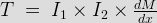
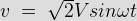
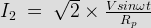
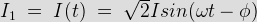
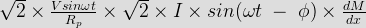
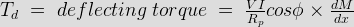

Before we study the internal construction of electrodynamometer wattmeter, it very essential to know the principle of working of electrodynamometer type wattmeter. Dynamometer type wattmeter works on very simple principle and this principle can be stated as "when any electric current carrying conductor is placed inside a magnetic field, it experiences a mechanical force and due this mechanical force deflection of conductor takes place".
Construction and Working Principle of Electrodynamometer Type Wattmeter
Now let us look at constructional details of electrodynamometer. It consists of following parts
There are two types of coils present in the electrodynamometer. They are :
(a) Moving coil : Moving coil moves the pointer with the help of spring control instrument. A limited amount of electric current flows through the moving coil so as to avoid heating. So in order to limit the electric current we have connect the high value resistor in series with the moving coil. The moving is air cored and is mounted on a pivoted spindle and can moves freely. In electrodynamometer type wattmeter, moving coil works as pressure coil. Hence moving coil is connected across the voltage and thus the electric current flowing through this coil is always proportional to the voltage.
(b) Fixed coil: The fixed coil is divided into two equal parts and these are connected in series with the load, therefore the load current will flow through these coils. Now the reason is very obvious of using two fixed coils instead of one, so that it can be constructed to carry considerable amount of electric current. These coils are called the electric current coils of electrodynamometer type wattmeter. Earlier these fixed coils are designed to carry the electric current of about 100 amperes but now the modern wattmeter are designed to carry electric current of about 20 amperes in order to save power.
(c) Control system: Out of two controlling systems i.e.
(1) Gravity control
(2) Spring control, only spring controlled systems are used in these types of wattmeter. Gravity controlled system cannot be employed because they will appreciable amount of errors.
(d) Damping system: Air friction damping is used, as eddy current damping will distort the weak operating magnetic field and thus it may leads to error.
(e) Scale: There is uniform scale is used in these types of instrument as moving coil moves linearly over a range of 40 degrees to 50 degrees on either sides.
Now let us derive the expressions for the controlling torque and deflecting torques. In order to derive these expressions let us consider the circuit diagram given below:
Electrodynamometer Type Wattmeter
We know that instantaneous torque in electrodynamic type instruments is directly proportional to product of instantaneous values of currents flowing through both the coils and the rate of change of flux linked with the circuit.
Let I1 and I2 be the instantaneous values of currents in pressure and electric current coils respectively. So the expression for the torque can be written as:

where x is the angle.
Now let the applied value of voltage across the pressure coil be

Assuming the electrical resistance of the pressure coil be very high hence we can neglect reactance with respect to its resistance. In this the impedance is equal to its electrical resistance therefore it is purely resistive.
The expression for instantaneous electric current can be written as I2 = v / Rp where Rp is the resistance of pressure coil.

If there is phase difference between voltage and electric current, then expression for instantaneous electric current through electric current coil can be written as

As electric current through the pressure coil in very very small compare to electric current through electric current coil hence electric current through the electric current coil can be considered as equal to total load current.
Hence the instantaneous value of torque can be written as

Average value of deflecting torque can be obtained by integrating the instantaneous torque from limit 0 to T, where T is the time period of the cycle.

Controlling torque is given by Tc = Kx where K is spring constant and x is final steady state value of deflection.
Advantages of Electrodynamometer Type Wattmeter
Following are the advantages of electrodynamometer type wattmeters and they are written as follows:
(a) Scale is uniform upto certain limit.
(b) They can be used for both to measure ac as well dc quantities as scale is calibrated for both.
Errors in Electrodynamometer Type Wattmeter
Following are the errors in the electrodynamometer type wattmeters:
(a) Errors in the pressure coil inductance.
(b) Errors may be due to pressure coil capacitance.
(c) Errors may be due to mutual inductance effects.
(d) Errors may be due connections.(i.e. pressure coil is connected after electric current coil)
(e) Error due to Eddy currents.
(f) Errors caused by vibration of moving system.
(g) Temperature error.
(h) Errors due to stray magnetic field.
 by
by